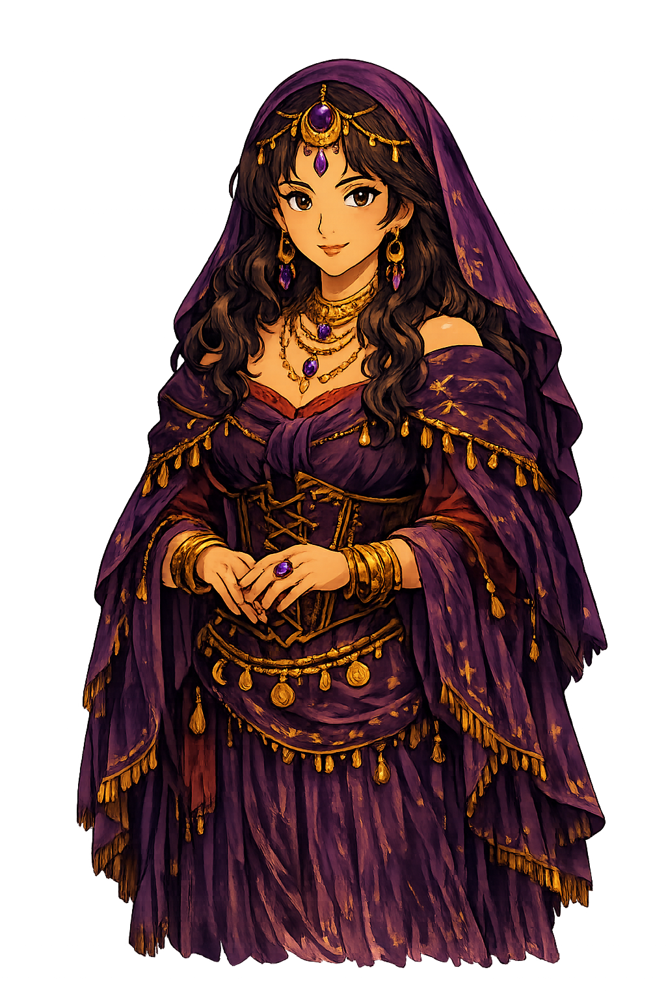

Madame Celandra channels her visions through the Anthropic API. Paste your API key below to begin. It is kept only on this device.
Need a key? Create one at console.anthropic.com. Your key is stored locally in your browser and sent only to Anthropic when Madame consults the cards.